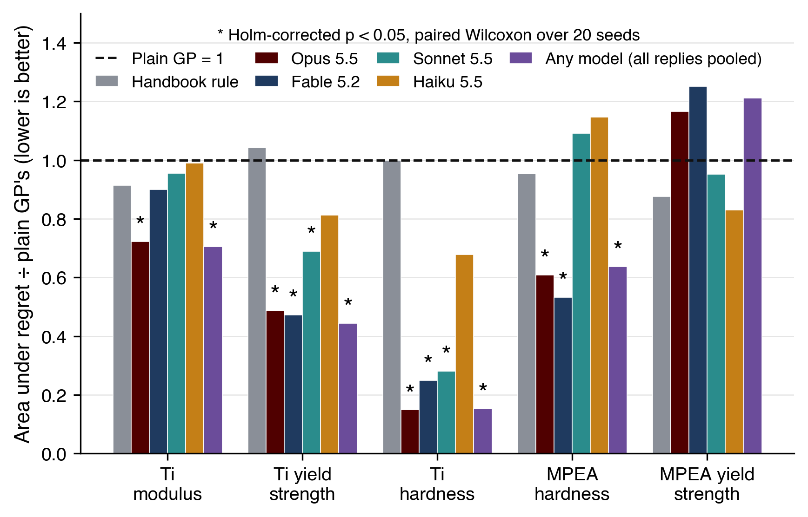

MATERIALS SCIENCE & ENGINEERING
TEXAS A&M UNIVERSITY
Department of Materials Science and Engineering
78
Done

written with no data, as GP mean
5 alloy tasks: 60 replies, 57 valid
35 Thermo-Calc targets: 280
2 crystal tasks: 18
Found

Opus 5.5: BO better on 4 of 5
MPEA yield: higher, not significant
Thermo-Calc: better on 16 of 33
crystals, 5 labels: ρ 0.15 → 0.95
Next

tail-aware selection rule
phase fractions; Ti α transus
BO on the crystal tasks
second pool; a real closed loop